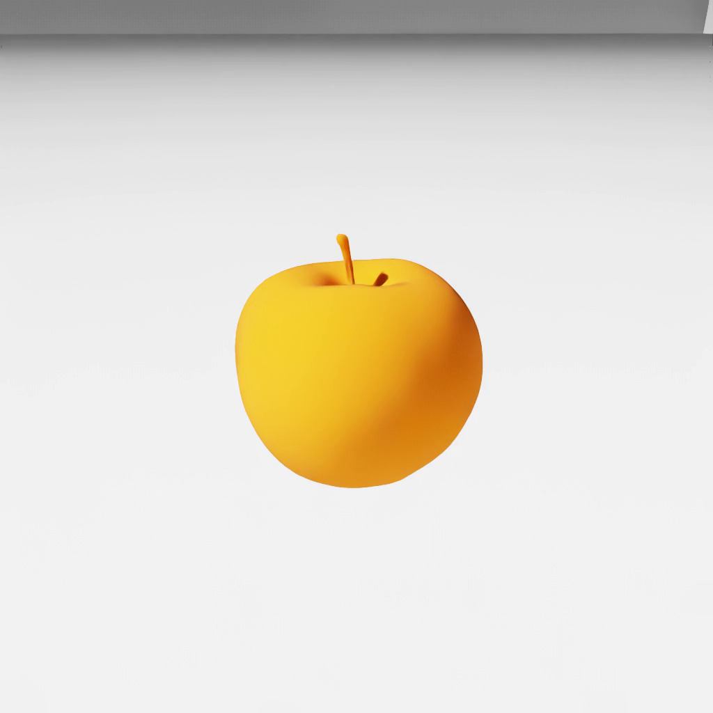

pivot (FET001 Visual)#
Property |
Value |
|---|---|
Test name |
pivot |
Feature(s) |
FET001_BASE_NEUTRAL |
Engine |
Kit / Isaac Sim (>=2024.2.0) |
Test version |
2.0.0 |
Summary#
Computes the asset bounding box and world position to verify the pivot is at the bottom-center, and runs a tilt and spin test to confirm the asset rests on the ground plane without penetrating or orbiting when placed at the origin.
What Pass Guarantees#
A passing result confirms that the asset’s pivot is at or near the bottom of its bounding box, which is the only gating criterion for this test. Reviewers, PMs, and OEMs can trust the asset will sit at ground level and will not float or sink when placed at the world origin. Horizontal centering, ground-penetration on tilt, and orbital motion on spin are measured and reported as advisory diagnostics; they do not gate pass or skip.
What It Checks#
The test evaluates four aspects of the pivot location and scores them:
Aspect |
Weight |
Condition |
|---|---|---|
Pivot at base |
0.70 |
The asset origin is within 10 percent of the bounding box height from the bottom of the bounding box. |
Pivot centered in XY |
0.10 |
The asset origin is within 10 percent of the largest horizontal dimension from the bounding box center in the XY plane. |
No ground penetration on X tilt |
0.10 |
Rotating the asset from -45 to +45 degrees around the X axis does not push any part of the mesh below the ground plane beyond a 5 percent tolerance. |
No orbital motion on Z spin |
0.10 |
Rotating the asset a full 360 degrees around the Z axis does not produce a bounding-box center trajectory whose radius exceeds 10 percent of the largest horizontal dimension. |
The combined score must reach 0.70 or higher to pass.
How It Works#
The asset is loaded with a visible matte ground plane (color 0.8, 0.8, 0.8) so the floor is clearly visible in the tilt and spin videos. A directional light (intensity 3000) and a weak dome fill (intensity 150) provide illumination. An orange matte diagnostic material is applied for visibility.
After loading, the asset bounding box and world position are queried directly. The height score and XY centering score are computed from these values before any rotation.
The tilt sweep runs 30 steps from -45 to +45 degrees around the X axis, recording the minimum Z coordinate of the bounding box at each step. Ground penetration is flagged when the minimum Z goes below negative 5 percent of the bounding box height.
The spin sweep runs 30 steps across a full 360-degree rotation around the Z axis, recording the bounding box center in XY at each step. The orbit radius is the largest range in X or Y divided by two. Orbital motion is flagged when the orbit radius exceeds 10 percent of the largest horizontal dimension.
Frames are captured every three steps during both sweeps and encoded as tilt and spin videos. These videos are kept regardless of the result.
A visibility pre-check runs before the pivot analysis. If the orange diagnostic color is not detected, the test is reported as SKIPPED (not failed), with an explanatory message.
Failure Cases#
A sub-threshold score is reported as SKIP, not a failure (refer to Notes and Caveats). Only the pivot-height check gates the result:
Symptom |
Likely cause |
|---|---|
Pivot height score not earned (gating condition) |
Asset origin is not at or near the bottom of the bounding box; the pivot is at the object midpoint or at the top |
The following conditions reduce the advisory score but do not gate pass or skip on their own:
Symptom |
Advisory diagnostic |
|---|---|
Pivot horizontal centering fails |
Asset origin is offset from the horizontal center; the object drifts when rotated at the world origin |
Ground penetration detected on tilt |
Pivot is above the base; tilting the asset causes the bottom to dip below the ground plane |
Orbital motion detected on spin |
Pivot is not at the horizontal center; rotating the asset around its vertical axis causes it to orbit rather than spin in place |
How to Fix#
Move the asset pivot to the bottom-center of the bounding box. The pivot should be at the ground level (the lowest point of the mesh) and centered horizontally. In most DCC tools this is done by setting the pivot or origin to the base of the object and then freezing or applying the transform.
Refer to the tilt and spin videos to visually confirm where the pivot is. An asset that penetrates the ground during tilt has a pivot that is too high. An asset that orbits during spin has a pivot that is off to one side.
Expected Result#

A still or near-still frame showing the asset placed at the world origin with the floor visible directly beneath it. The asset’s lowest point should touch the floor, reflecting a pivot at the bottom-center of the bounding box.
Notes and Caveats#
A sub-threshold pivot score is reported as SKIPPED, not as a failure. The tilt and spin videos are preserved with an explanatory message so the result can be judged visually. This advisory behavior exists because the correct pivot location depends on the object type. Rotating or hinged objects such as doors or robot joints have their pivot at the rotation center, not at the base. Attached objects such as cameras or wheels have their pivot at the attachment point. Those object types are not ground-placeable props and are not expected to pass this check.
The height tolerance of 10 percent of the bounding box height accommodates minor offsets from DCC tool precision or floating-point rounding. The penetration tolerance of 5 percent allows slight clipping from rounded bases or complex geometry at the bottom of the mesh.